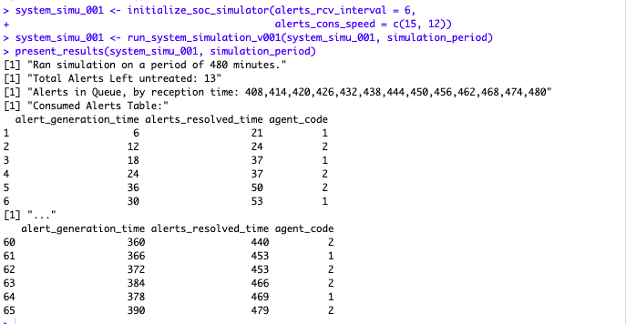
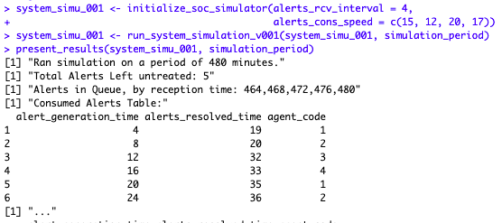
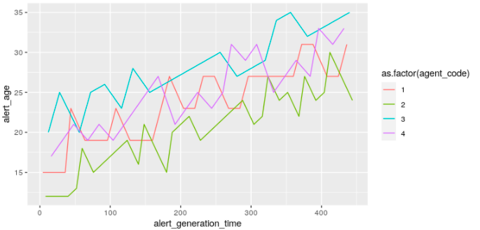
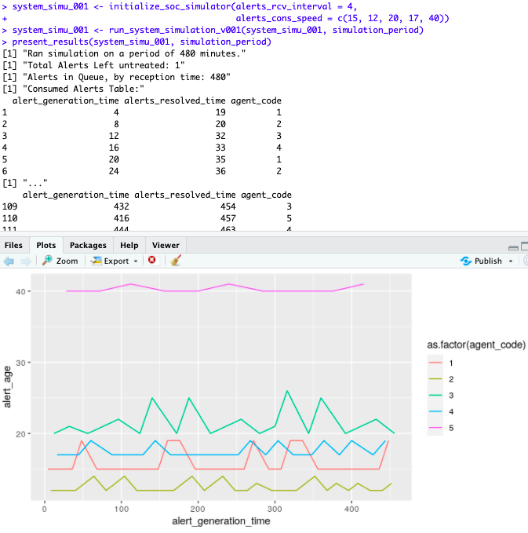

Intro
Warning: This is a rather long Blog entry. My apologies. Lots of text. But I’m using it to present some things that will be useful to understand for future entries on the same topic.
So I’ve been rather busy the last few weeks. Among other things, in August I sent out some documentation to get myself as a student into an MSc degree. That’s not too important (and I still have some paperwork pending before I’m actually officially accepted for it), but one thing however motivates this particular topic of today: One of the upcoming courses is about computer simulations.
I went on and bought the books for the first courses I aim for, ahead of time, and started studying those. (Personal side note: My matrices math is rusty to say the least, so I am also brushing up on that too, as it seems I might need it very soon :S)
OK, back on track:
How about simulating a SOC in order to try and estimate “how many SOC Analysts might be needed to attend a given volume of alerts”?

Context
If you have even a basic understanding of what a Security Operations Center looks like, you can probably safely skip this section and jump to “Simplified Assumptions” below…
A “Security Operations Center” (or SOC for short) is a rather big endeavour for any sizeable company. Beyond the technical considerations, and the many processes to consider, and even the reasons behind the existence of SOCs in companies, let’s just say that one of the potentially important derived costs (or, depending on how you look at it, investments – but that’s another complex debate) from a SOC is in “head-count”. (I will NOT get into whether or not those costs are justified, nor discuss my opinions on that. Let’s assume I have worked in SOC setups in the past, and that’s that on the matter.)
In a SOC, an analyst reviews a queue of incoming Cybersecurity alerts, and treats each alert. Ideally, all alerts are reviewed.
In a simplistic and perfect World, supposing no holidays or weekends, you need at the very least 3 persons to cover a 24/7 operation, considering 8h shifts. This amounts to exactly one person per shift, with no respite whatsoever. I.e. those persons would be like robots, really.
Separate the week-ends, and you probably need at least another two persons working 12h shifts each, two shifts per weekend, to cover all the hours of the week. As they work less hours in the year, these two might be used to replace the monday-to-friday workers, so that the later can take a day off now and then.
So far, we get to 5 persons, 2 of which with 24h workweeks by default. And those are not a realistic assumptions, but let’s not focus too much on that. Bear with me, as we are talking about simulations here, which simply put generally simplify the real world. And that will hold true onwards.
In this our perfect ideal not-at-all realistic productive World, we would then assume that each person, a SOC Analyst, can keep up and respond to all alerts generated during her shift with no help. Our “perfect” analyst hence manages to somehow review and manage alerts at least as fast as those are generated* (see below in this section), on average.
In other words, in this scenario, alerts are generated at a certain rate, and one analyst is able to manage that alert faster than the time that passes before the following alert arrives.
Obviously, all the above is incorrect in more than a few ways.
No human is able to focus perfectly for 8h straight, so right there.
Throw in holidays, sick-leave, lunch time, human-realistic attention-spans, personal interactions (meetings, coffees, etc.)…
Then suppose that the rate of alerts generation surpasses somehow the speed at which each alert can be treated. All of the sudden you need more analysts per shift to attend “all alerts generated during the shift”.
Being conscious of these and many (MANY) other considerations that we should take into account, let’s try and create a simplified simulator of such a System that obviates most of them. We’ll call it a “toy” simulator for now.
* For those unfamiliar with the concept:
A simplistic view of a SOC is that of a System in which many machines send logs to a central repository. The central repository (usually called a SIEM in this scenario) derives alerts from those logs when it “sees” a set of conditions that warrant review, from a Cybersecurity perspective. The most common example out there is that of a brute force attack, whereby someone tries to log in with different usernames and passwords until they are able to get onto a target system. Detecting the many failed logins attempts in a given time period would trigger an alert. That’s basically one example of what a SIEM does (among other things that are beyond the scope here).
Simplified assumptions
OK so let’s make some suppositions (way too many of them once again, but this is for a toy simulation, for now):
Our simulated System (our SOC) sees events as time passes by, in minute intervals. For the time being, let’s assume these events are “alerts”. These events are discrete (either there is one (or more) alert(s), or not; but there is no such thing as half an alert).
Our SOC receives alerts from a SIEM, and only from there. In other words, we have one “generator agent” for our events (alerts) in our System.
Alerts are put in ONE queue by the generating agent (i.e. the SIEM). This is a simplification once again, so that we consider “all alerts are born equal” (which obviously is not true in the real world, but that’s for later versions of the thing).
Alerts are consumed in a FIFO manner from that queue (…), one at a time. For now, no prioritization. (Once again: all alerts are considered the same in this toy scenario.)
One alert is consumed by a consuming agent (i.e. a SOC analyst). A consuming agent only deals with one alert at any given time. She is hence either occupied, or not, at any given minute of the simulation period.
A given consuming agent spends a certain fixed amount of minutes dealing with one alert.
To make this only a little interesting, we will allow for more than one agent to consume from the queue, when available, if there are alert(s) in the queue. Each of those (the analysts) then will spend a certain amount of minutes treating an alert, depending on the efficiency of each analyst. We will make the further assumption for now that each agent spends a fixed amount of time each time she treats an alert.
On the other hand, in order to keep this first toy simulation simple for now, we consider our SIEM will generate one alert at a specific rate (e.g. 1 alert every X minutes).
How the code for today works
So here is the code for our first toy simulator (I’m sorry for stressing the “toy” part so much, but it’s just that I need to make it clear I understand this is not at all practical. This is just a personal exercise that I created for the fun of it).
We will initialize our System like so:
system_status <- list(a_rcv_int = alerts_rcv_interval,
alerts_queue = c(),
cons_agents = c_agents, # Analysts are "Consumer Agents"
treated_alerts_hist = data.frame(alert_generation_time = NULL,
alerts_resolved_time = NULL,
agent_code = NULL))Alerts are received at an interval (in minutes). They get pushed in a queue (FIFO). We will keep track of which alerts were taken out of the queue, at what time they were completely treated, and by which analyst.
Our Analysts are characterized by how fast they can treat an alert.
c_agents <- rbind.fill(lapply(1:length(alerts_cons_speed), function(x) {
data.frame(agent_code = x,
ag_resolution_time = alerts_cons_speed[x],
ag_occupied = FALSE,
ag_current_alert = -1,
ag_next_avail = 0)
}))They are either occupied or not. If occupied, we will store their “next available time”, and mark which alert they are consuming.
To make things simple, our alerts are all considered equal, and so we only care about when they are put in the queue.
add_alerts_stable <- function(alerts_queue, alerts_recv_interval, t_mark) {
# Add to the end of the FIFO
if(t_mark %% alerts_recv_interval == 0) alerts_queue <- c(alerts_queue, t_mark)
alerts_queue
}At any point in time (current minute “t_mark”), if a given analyst was occupied, we review whether or not we can free her:
if(agent_status$ag_occupied) { # Agent (e.g. SOC Analyst) is currently busy
# Has the agent finished with its last alert?
if(t_mark == agent_status$ag_next_avail) {
# Add resolution to history of alerts treatment table
system_status$treated_alerts_hist <- rbind(system_status$treated_alerts_hist,
data.frame(alert_generation_time = agent_status$ag_current_alert,
alerts_resolved_time = t_mark,
agent_code = agent_status$agent_code))
# Update the Agent Status
agent_status$ag_occupied <- FALSE
agent_status$ag_current_alert <- -1
}
}Our analysts consume alerts for the queue (FIFO) when they are available, immediately. (This runs if when reaching the current minute, the analyst was free.)
changed_alerts_queue <- consume_1_alert(system_status$alerts_queue, t_mark)
if(!is.null(changed_alerts_queue)) {
t_alert <- changed_alerts_queue[[1]]
system_status$alerts_queue <- changed_alerts_queue[[2]]
agent_status$ag_occupied <- TRUE
agent_status$ag_current_alert <- t_alert
agent_status$ag_next_avail <- t_mark + agent_status$ag_resolution_time
}Where:
consume_1_alert <- function(alerts_queue, t_mark) { # Get 1 alert from the FIFO
if(length(alerts_queue) > 0) { # There are alerts to consume
alert_orig_t <- alerts_queue[1]
alerts_queue <- alerts_queue[-1]
return(list(alert_orig_t, alerts_queue))
}
NULL
}At any point in time (current minute “t_mark”), we first add alerts to the alerts queue. Then we consume alerts, looping through our list of analysts.
And this is more or less it.
All we need to do then is repeat the above things a given amount of minutes (e.g. one shift of 8 * 60 minutes).
At the end of the execution, we will have a queue of alerts that were left untreated, as well as a table of who reviewed which alert (which in this case gives us directly the time at which the alert was generated), along with when that particular alert review was completed.
Running it and some results
In the following example, we decide our System is like follows:
1 alert gets generate every 6 minutes
Two analysts treat alerts, one of them in 15 minutes, the other in 12.

From the above results, you can tell one analyst treats more alerts than the other, and that some alerts are resolved earlier in spite of being taken by someone later than others (see rows 4, 5 and 6 in the screenshot above).
You can also tell that some of the time the analyst 1 (for example) was left unoccupied. At row 3 of the above, the first analyst has resolved 2 alerts by the time “minute 37”, while we know she spends 15 minutes on each alert.
However, by the end of the period, two analysts were not able to treat all the alerts received. As we receive 2 alerts in 12 minutes, but our 2 analysts can manage less than that…
This is all expected, of course. But we now have a setup to use and try different combinations, changing:
the rate of alerts arrival (minutes between any two alerts, fixed intervals),
the combination of analysts (how many of them) and their respective productivity (time spent on each alert, fixed per analyst).
This would be the basis for our basic simulator.
Let’s test another setup, and then throw in some very basic ggplots in there (not covered on the GitHub version of the code).
So here we run a second scenario: 1 alert is received every 4 minutes, and we have four analysts that can respond more or less fast…

As we can tell, at the end of the period, in spite of having 4 analysts, well, 5 alerts remain untreated. What does it look like graphically?

As is rather logical, the fastest agents (in order, the fastest is agent 2, while the slowest is agent 3) treat more alerts in the period. They go back to the queue faster.

But even then, the four of them can’t really keep up. The “age” of the alerts, that is, the time at which it is treated, compared to the time it was received in the queue, is growing, clearly.
We can probably fix that with a fifth consumer (analyst), even a very slow one (e.g. a junior starting in the position, maybe, that takes 40 minutes treating one alert):

That worked, the overall team was able to cope.
What about training our original team so that they can react faster? Or simplifying a process step, or adding some automation, so that the original 4 analysts each spend one less minute on each alert?

What if instead of help the 4 of them, we focused on improving only the productivity of our slower element, making it as fast as the slowest of her colleagues?

Well, now we have a tool to help us take such decisions.
Potential derived work
Alerts are not received at a set interval. Nor do you necessarily receive one each time. Alerts are also not all the “same”. Plus Analysts are not robots, and so they might spend more or less time on each alert. Right there I have plenty of potential work on the simulator.
Then, supposing we can hire a certain amount of analysts:
within a given budget
given that there is more than one analyst profile with a corresponding cost and corresponding response time (per profile)
(…)
Can we decide for example which mix of analyst-profiles we should hire, to ensure that:
at the end of any given shift of 8 hours, the alerts queue is empty (no alert is left unattended),
while minimizing our operational cost (in terms of payrolls), supposing we know the rate of incoming alerts upfront?
Side Note: Nowadays, there is some hype in the Cyber Security Industry around the concept of “SOAR”. We will not get into that just yet, but for any future reference, we’ll assume a SOAR platform acts as a “perfect robot analyst” capable of managing through automations a subset of alerts , depending on its configurations. In that sense, the SOAR could in theory replace one (or more) of our analysts. That robot analyst is probably priced differently than a human Analyst… But let’s get back to the objectives.
Considering the above:
For now: we just got our first toy simulator to work, and we focus on the first part of the problem. I think simulations like the above (but obviously more elaborate to be nearer the real-world scenarios) could help answer part of such a question.
I believe the second part of the objectives would point to an “Operations Research” problem (as simple as it might be, but still)… However that’s for future consideration (and incidentally, that’s another topic of the Master’s Degree :)).
Then with forecasting, based on real-world data or simulated distributions, of log sources integration into our SIEM, our rate of definitions of new alerts, relation of logs/alert, and (quite) a few more parameters, we could estimate (or rather do a more educated ballpark estimation) upfront and prepare to size our SOC accordingly.
In theory, that is. But even if/when this is not realistic at all, I like to think this kind of exercises is interesting at least.
Also, obviously: the presentation of the results of the simulation could be improved, the simulator could be run from a Shiny Application, and so on and so forth. That’ll probably come, but not today 🙂
Conclusions
I really don’t know if I’ll manage to put enough effort into these concepts soon or not. But if I do, I’d hope to get a “SOC simulator” that could help “guesstimate” (at best) the number of analysts to hire for a SOC based on some data.
From there, one could seek to optimize the mix of analysts to hire in order to maintain costs as low as possible (while treating of course all alerts received with a given quality standard).
And if not: it’s fun to apply some simulation concepts…